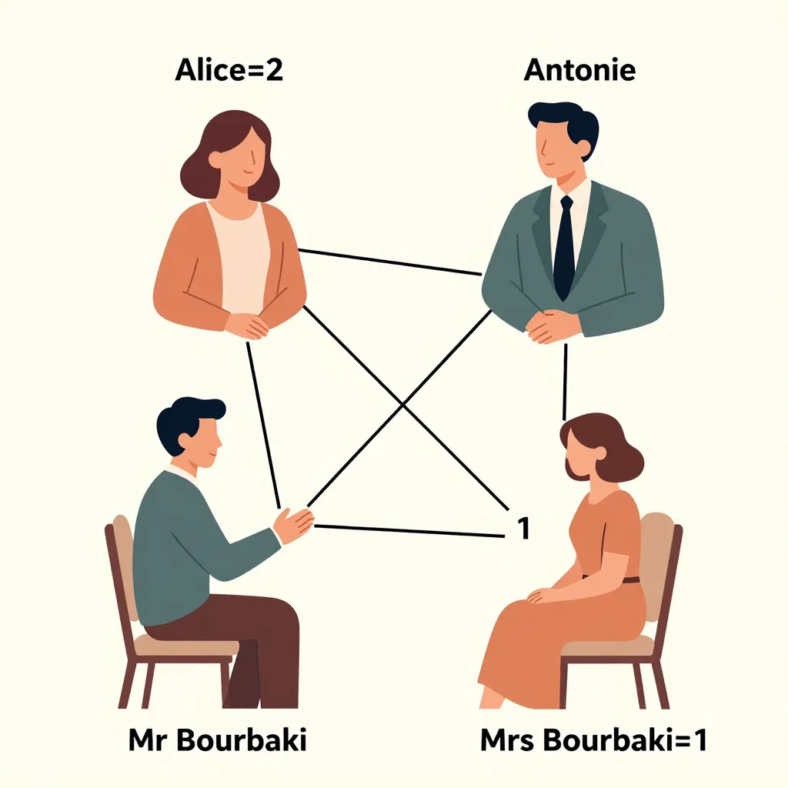
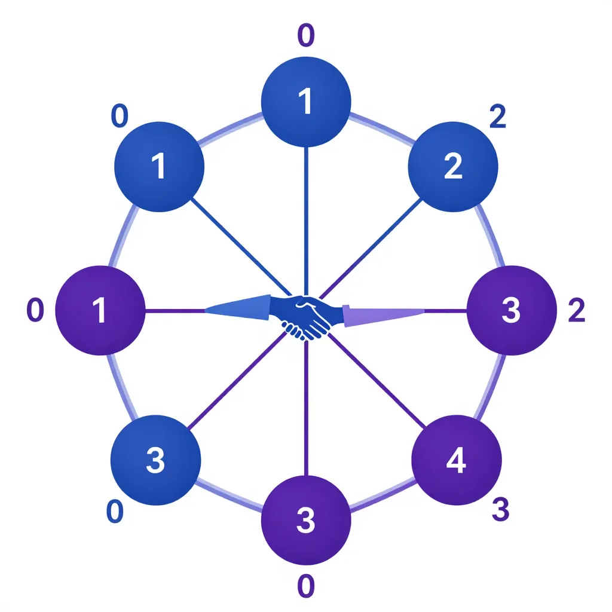

1 Chapitre 1 : Les poignées de main de Bourbaki
1.1 Une soirée chez les Bourbaki
Les Bourbaki reçoivent ce soir.
Monsieur et Madame Bourbaki ont invité n couples à dîner. Les invités arrivent, et comme le veut l’usage, on se serre la main. Chacun serre la main de certaines personnes — jamais la sienne, jamais celle de son conjoint. Les poignées de main terminées, Monsieur Bourbaki, curieux de nature, interroge chaque personne présente (sauf lui-même) : « Combien de mains avez-vous serrées ? »
Il obtient 2n + 1 réponses — une par personne interrogée (les n couples invités, plus Madame Bourbaki). Et voici la surprise : toutes les réponses sont différentes.
La question qui nous intéresse : combien de mains Madame Bourbaki a-t-elle serrées ? Et combien Monsieur Bourbaki lui-même ?
Ce problème, popularisé par Martin Gardner [Ga] et repris par Cogis et Schwartz [CS], est notre porte d’entrée dans la théorie des graphes. Sa solution repose sur un raisonnement par récurrence d’une élégance remarquable — et sa conclusion est aussi inattendue que satisfaisante.
Le nom n’est pas anodin. « Nicolas Bourbaki » est le pseudonyme collectif d’un groupe de mathématiciens français — parmi lesquels André Weil, Jean Dieudonné, Henri Cartan — qui, à partir des années 1930, entreprirent de réécrire les mathématiques de façon rigoureuse et unifiée. Leur ambition : montrer que derrière le désordre apparent des résultats mathématiques se cache une structure profonde et ordonnée.
C’est exactement ce que ce petit problème de poignées de main va illustrer : une situation apparemment chaotique possède une structure cachée, nette et invariable.
1.2 Le problème, formellement
Posons les choses précisément.
Il y a 2n + 2 personnes à la soirée : les n couples invités, plus le couple Bourbaki. Chaque personne peut serrer entre 0 et 2n mains (toutes les personnes présentes sauf elle-même et son conjoint).
En théorie des graphes, chaque personne est un sommet (un point) et chaque poignée de main est une arête (un trait qui relie deux points). Le nombre de mains serrées par une personne s’appelle son degré.
Formellement : le degré d’un sommet v, noté d(v), est le nombre d’arêtes incidentes à v — c’est-à-dire le nombre de connexions directes de ce sommet.
C’est la notion centrale de ce chapitre. Elle relie une quantité locale (combien de voisins a un sommet) à la structure globale du graphe.
Monsieur Bourbaki interroge 2n + 1 personnes. Chacune donne un nombre différent. Or les réponses possibles vont de 0 à 2n — c’est exactement 2n + 1 valeurs distinctes. Donc les réponses sont exactement : 0, 1, 2, …, 2n.
Autrement dit, quelqu’un n’a serré aucune main, quelqu’un en a serré exactement une, et ainsi de suite jusqu’à quelqu’un qui a serré 2n mains — le maximum possible. Toute la gamme des degrés est couverte.
1.3 Le cas le plus simple
Commençons par le cas n = 1. Il y a un seul couple invité — appelons-les Alice et Antoine — plus Monsieur et Madame Bourbaki. Quatre personnes en tout.
Monsieur Bourbaki interroge les trois autres. Les réponses sont 0, 1, et 2 (toutes différentes, exactement les valeurs de 0 à 2n = 2).
Qui a répondu 2 ? Cette personne a serré la main de tout le monde sauf de son conjoint. Il y a trois personnes possibles (en excluant soi-même et son conjoint) — et elle les a toutes serrées. Disons que c’est Alice.
Qui a répondu 0 ? Cette personne n’a serré aucune main. Si Alice a serré la main de tout le monde (sauf Antoine), alors Antoine ne peut pas être celui qui a répondu 0 — car Alice lui a serré la main. Mais Alice a serré la main de Monsieur Bourbaki et de Madame Bourbaki. Donc la personne ayant répondu 0 ne peut être que Antoine — le conjoint de celle ayant répondu 2.

Voici la clé : la personne ayant le degré maximal (2n) et celle ayant le degré 0 forment nécessairement un couple. Si quelqu’un a serré la main de tous (sauf son conjoint), alors son conjoint est le seul à pouvoir n’avoir serré aucune main — car tout le monde a reçu au moins une poignée de la personne au degré maximal.
Récapitulons : Alice a répondu 2, Antoine a répondu 0. Il reste Madame Bourbaki qui a répondu 1.
Et Monsieur Bourbaki ? Il a serré la main d’Alice (qui a serré la main de tout le monde sauf Antoine), mais pas d’Antoine (qui n’a serré aucune main). Donc Monsieur Bourbaki a aussi serré 1 main.
Résultat : pour n = 1, chaque membre du couple Bourbaki a serré exactement n = 1 main.
1.4 Le mécanisme de l’élimination
Le cas de base nous a révélé un principe puissant : les extrêmes s’éliminent par paires.
Pour le cas général, voici comment fonctionne la récurrence. Supposons le résultat vrai pour n − 1 couples, et montrons-le pour n couples.
Parmi les 2n + 1 réponses (0, 1, 2, …, 2n), considérons la personne qui a répondu 2n — appelons-la Max. Max a serré la main de toutes les 2n personnes possibles (tout le monde sauf Max et son conjoint). Qui a répondu 0 ? Par le même raisonnement que dans le cas de base, c’est nécessairement le conjoint de Max — appelons-le Min.
Imaginez une boîte contenant 2n + 2 chaussettes, deux de chaque couleur — chaque couleur représente un couple. On tire deux chaussettes et on les apparie, à condition qu’elles ne soient pas de la même couleur. Puis on les retire de la boîte.
C’est exactement le mécanisme de la preuve. À chaque étape, on identifie le couple extrême (Max et Min) et on les « retire de la boîte ». En les retirant, chaque personne restante perd une poignée de main dans son décompte — car Max avait serré la main de tout le monde. Les réponses restantes, après ajustement, deviennent : 0, 1, 2, …, 2(n − 1).
On se retrouve exactement dans la situation de départ, mais avec n − 1 couples au lieu de n. Après n éliminations, il ne reste que les deux chaussettes de la couleur « Bourbaki » — le couple hôte, ayant participé à n associations chacun.
Voilà toute l’astuce. À chaque étape :
- On identifie le couple extrême (degré 2n et degré 0)
- On les retire — ils forment un couple invité
- On ajuste les degrés des personnes restantes (chacune perd 1, car Max avait serré la main de chacune)
- On obtient un problème identique avec n − 1 couples
Après n éliminations, il ne reste que le couple Bourbaki. Et à chaque élimination, les degrés extrêmes étaient appariés. Par symétrie, les deux membres du couple Bourbaki se retrouvent avec le même nombre de poignées de main : exactement n.
Ce résultat est bien plus fort qu’il n’y paraît. Il ne dépend d’aucune disposition particulière des invités. Peu importe qui serre la main de qui — tant que toutes les réponses sont différentes, le nombre de poignées du couple Bourbaki est forcé par le simple comptage du nombre de couples.
C’est une propriété structurelle du graphe, pas un accident de la soirée. Dès que le nombre total de couples est fixé, le résultat est déterminé.
1.5 Pourquoi c’est surprenant
Arrêtons-nous un instant pour mesurer ce résultat.
On vous dit que 2n + 1 personnes donnent des réponses toutes différentes. Sans aucune autre information — sans savoir qui a serré la main de qui — vous pouvez déduire exactement le nombre de poignées de la personne non interrogée. Et pas seulement ça : vous savez que Monsieur et Madame Bourbaki ont exactement le même score.

Ce résultat illustre une propriété fondamentale des graphes : la séquence de degrés — la liste ordonnée du nombre de connexions de chaque sommet — contient une quantité énorme d’information sur la structure du graphe. Dans notre problème, les degrés forment la suite complète 0, 1, 2, …, 2n. Le couple Bourbaki occupe les deux valeurs médianes : n et n. Sous la contrainte « pas de poignée avec son partenaire », les degrés sont forcés à couvrir toute la gamme possible.
En d’autres termes, le problème révèle trois propriétés profondes :
- La somme des degrés est toujours paire — chaque poignée de main est comptée deux fois (une par chaque participant)
- Les degrés couvrent toute la gamme — la contrainte conjugale force une couverture complète de 0 à 2n
- Le degré médian est déterminé — il correspond exactement au nombre de couples invités
Connaître la séquence de degrés, c’est déjà savoir beaucoup sur le réseau. Ce principe — les contraintes locales déterminent la structure globale — nous accompagnera tout au long de ce livre.
1.6 Ce que nous avons appris
Résumons avant de poursuivre.
| Concept | Ce qu’il faut retenir |
|---|---|
| Le degré d’un sommet | Le nombre de connexions directes — la mesure la plus fondamentale en théorie des graphes |
| La séquence de degrés | La suite ordonnée 0, 1, …, 2n : elle encode la structure du réseau et le couple Bourbaki occupe les valeurs médianes |
| La preuve par récurrence | Réduire un problème de taille n à un problème de taille n − 1, en identifiant les paires extrêmes |
| L’invariance structurelle | Le résultat ne dépend d’aucune disposition particulière — il est forcé par les contraintes du graphe |
1.7 Vers l’assemblée et les tiroirs
Le problème de Bourbaki nous a montré qu’un graphe — des points reliés par des traits — peut encoder une situation sociale et révéler des structures cachées. La notion de degré, si simple en apparence, s’est avérée d’une puissance remarquable. Même un problème de soirée se traduit en un graphe où les propriétés — degrés, parité, symétrie — sont très structurées.
Chez les Bourbaki, toutes les réponses étaient différentes — et cette hypothèse suffisait à déterminer la structure entière du graphe. Mais est-ce seulement possible que tous les degrés soient différents ? Peut-on imaginer une assemblée de n personnes où chacun connaît un nombre différent de personnes ?
La réponse, aussi surprenante que définitive, va mobiliser un principe d’une simplicité désarmante — le principe des tiroirs — et confirmer une leçon fondamentale : les degrés d’un graphe ne sont jamais aussi libres qu’on le croit.